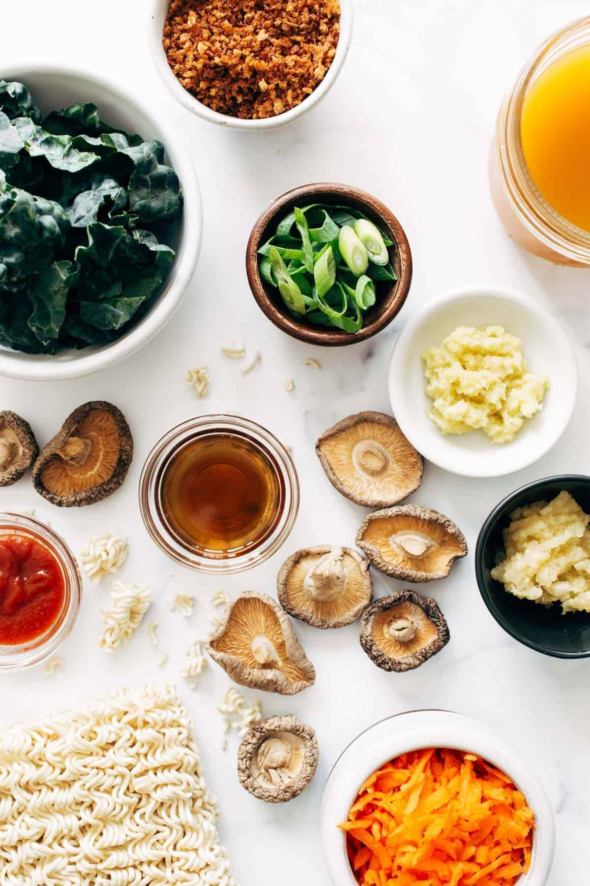

“Ramen mian is super dish”

this quick homemade ramen. Fresh veggies and herbs make this extra delicious, healthy, and cozy!
now!! it is the time for cooking
Add to your grocery list :
- Sesame seeds
- Toasted sesame oil
- Sriracha
- Shredded chicken or thinly sliced beef or pork
- Nori

How to Make ramen :
- Heat the sesame oi
- add the mushrooms and simmer in a pot and wait for 10 minutes
- until mushrooom become soften and stir
- stir in the kale and carrots, and top with crunchy panko
- serve your dish